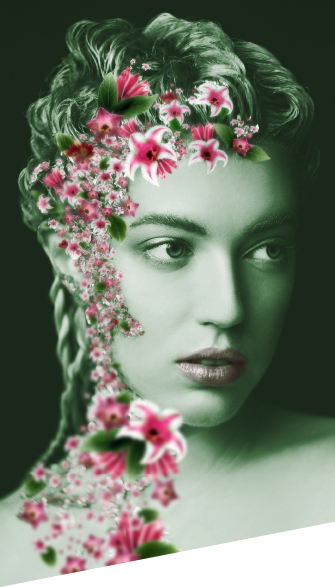
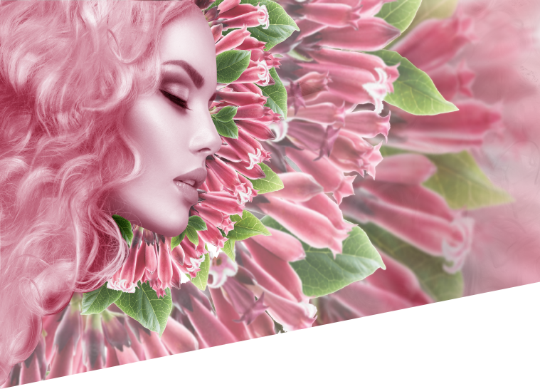
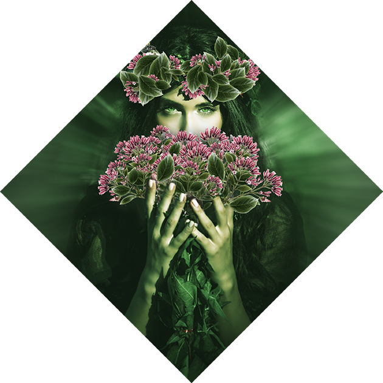
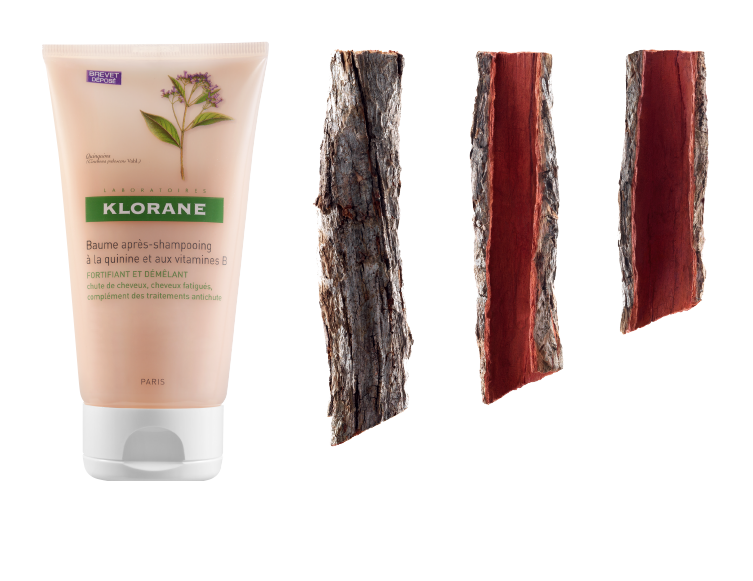

<!DOCTYPE html>
<html>
<head>
  <meta charset="utf-8">
  <link rel="stylesheet" href="css/animate.css">
  <link rel="stylesheet" href="https://cdnjs.cloudflare.com/ajax/libs/animate.css/3.5.2/animate.min.css">
  <link rel="stylesheet" href="css/style.css">
</head>
  <body>

<div class="container">
  <div id="wrapper">
    <div id="content" class="clearfix">
      <div class="main">

        <div class="lesson -one clearfix">

          <div class="slider-control js-first-control"><div><span>Бьюти-<br/>шпаргалка</span></div></div>

           <div class="left">
             <h1 class="main-title">Уроки ботаники<br/>для ваших волос</h1>

            <div class="image-slider animated fadeInUp">
              <ul class="image-list">
                <li class="image-item -one"></li>
                <li class="image-item -two"></li>
              </ul>
              </div>

           </div>

          <div class="right">
            <div class="main-intro-text">
              Межсезонье — сложное время. Лето позади, до Нового года далеко, солнца катастрофически не хватает, а вслед за листопадом наступает куда менее живописный период выпадения волос. Кажется, выручить в такой ситуации может лишь поездка в теплые края. Woman.ru решил отправиться в Южную Америку, где собирают ингредиенты для серии KLORANE с хинином и витаминами группы B. Уроки, которые мы извлекли из этой экспедиции, — в нашем обзоре.
            </div>
            <div class="line"></div>
            <div class="text-slider">
                <div class="text-item -one animated fadeInDown" style="display: block;">
                  <h3 class="lesson-title -dark"><span>Урок 1.</span> Что такое хинин?</h3>
                  <div class="lesson-content">
                    Хинин — это экстракт, полученный из коры южноамериканского хинного дерева. Название растения происходит от древнеперуанского quina-quina. Значение этих слов история не сохранила. Но судя по тому, что удвоение корня является в Перу знаком особого уважения, похоже, что целебные свойства дерева были известны еще много сотен лет назад. У хины есть и еще одно название — цинхона. Это название Карл Линней дал дереву в честь супруги вице-короля Испании Анны Цинхоны. Согласно легенде, во время пребывания в заморских владениях она была излечена от малярии служанкой из племени инков и привезла замечательное лекарство на родину.
                  </div>
                </div>
                <div class="text-item -two animated fadeInUp">
                  <div class="beauty-content">Самый ценный на сегодня вид цинхоны — Cinchona pubescens Valh., кора которой отличается особенно высоким содержанием хинина. Именно его используют для экстракции хинина ведущие производители противомалярийных лекарств. И именно она вошла в состав средств KLORANE для ослабленных и выпадающих волос.
                </div>
                </div>

            </div>
          </div>

        </div>

         <div class="extra-info -first">
            <div class="content">В XXI веке<br/>ученые совершили<br/>прорыв в косметологии,<br/>обнаружив, что добавляя хинин к другим<br/>ингредиентам, можно в разы улучшить их<br/>усвоение. Без химических катализаторов.</div>
         </div>

        <div class="lesson -two">
          <div class="slider-control js-second-control"><div><span>Бьюти-<br/>шпаргалка</span></div></div>

          <div class="image-slider animated fadeInUp">
            <ul class="image-list">
              <li class="image-item -one"></li>
              <li class="image-item -two"></li>
            </ul>
          </div>

          <div class="text-slider">
              <div class="text-item -one animated fadeInUp clearfix" style="display: block;">
                <div class="lesson-content animated fadeInUp">
                <h3 class="lesson-title -dark"><span>Урок 2.</span><br/>Зачем нужен хинин?</h3>
                  <span>В XIX веке англичане придумали добавлять этот порошок в газировку: колонии Великобритании располагались в тропических странах, где бушевала малярия. А антисептик хинин, в те годы использовавшийся вместо антибиотиков, позволял английским колонистам не разболеться. В начале</span>
                </div>
                <div class="lesson-content animated fadeInDown">
                  волне интереса к психотерапии хинин стал входить в состав седативных сборов — оказалось, что он неплохо успокаивает. А в начале XXI века ученые обнаружили еще одну любопытную вещь: выяснилось, что тот же самый хинин регулирует межклеточный обмен веществ в коже. Это стало прорывом в косметологии: получалось, что, соединив экстракт хины с другими активными ингредиентами, можно было в разы улучшить их усвоение. Не прибегая при этом ни к каким химическим компонентам и «катализаторам».
                </div>
              </div>
              <div class="text-item -two animated fadeInUp">
                <div class="beauty-content animated fadeInDown">
                  Что делать, если, несмотря на правильное питание и прием витаминов, волосы сильно выпадают и выглядят тусклыми и ослабленными? Вполне возможно, полезные вещества до них попросту не доходят. Если волосяная луковица ослаблена, снижается и ее способность «высасывать» полезные вещества из кожи. При этом проблема
                </div>
                <div class="beauty-content animated fadeInUp">
                  уходит, стоит только укрепить волосяной фолликул. Именно на это сделали ставку создатели новой серии для волос с хинином лаборатории KLORANE. Экстракт хины воздействует на волосяной фолликул, повышая его жизнеспособность, активизируя рост и улучшая усвоение витаминов группы B. В результате волосы выглядят гладкими и яркими, как после биологического окрашивания.
              </div>
              </div>
          </div>

        </div>

        <div class="extra-info -second">
          <div class="content">
            Витамины группы B не случайно называют витаминами красоты. От витамина B12 зависит состояние волосяных луковиц. Укрепляющим действием обладает и витамин B8 — именно при недостатке этих двух витаминов волосы начинают выпадать.
          </div>
        </div>

        <div class="cosmetics">
          <h2 class="cosmetics-title">бьюти-канцеляри</h2>
          <div class="cosmetics-item -first">
            <div>
              <h4 class="item-title">Шампунь KLORANE<br/>с хинином<br/>и витаминами группы B</h4>
              <div class="item-content">
                <span>Шампунь содержит три главных витамина красоты для волос: B6, B8, B12, а также активный компонент хинин. Работая в команде, они улучшают микроциркуляцию в коже головы, укрепляют волосы и стимулируют луковицы к дальнейшему росту. Шампунь не вызывает раздражения даже после агрессивных дермокосметических программ по восстановлению и уменьшению выпадения волос. При этом, несмотря на растительный состав, отлично очищает. </span>
              </div>
              <a href="#">узнайте больше</a>
            </div>
          </div>

          <div class="cosmetics-item -second"></div>
        </div>


      </div>
      <div class="clearfix"></div>
    </div>
  </div>
</div>

<script src="https://code.jquery.com/jquery-3.1.1.min.js"   integrity="sha256-hVVnYaiADRTO2PzUGmuLJr8BLUSjGIZsDYGmIJLv2b8="   crossorigin="anonymous"></script>
<script src="https://cdnjs.cloudflare.com/ajax/libs/wow/1.1.2/wow.min.js"></script>
<script src="js/script.js"></script>
<!-- <script src="js/script2.js"></script> -->
<script>


// var currentIndex = 0,
// // photoItems = $('.image-slider div'),
// // itemAmt = photoItems.length,
// textItems = $('.text-slider div'),
// // itemBmt = textItems.length;
//
// function cycleItems() {
// // var photo = $('.image-slider > div').eq(currentIndex);
// var text = $('.text-slider > div').eq(currentIndex);
//
// // photoItems.hide();
// textItems.hide();
// // photo.css('display','block');
// text.css('display','block');
// }
//
// $('.slider-control').click(function() {
// currentIndex += 1;
// if (currentIndex > itemAmt - 1) {
//   currentIndex = 0;
// }
// textItems.fadeIn( 600 );
// cycleItems();
// });

</script>

  </body>
</html>
